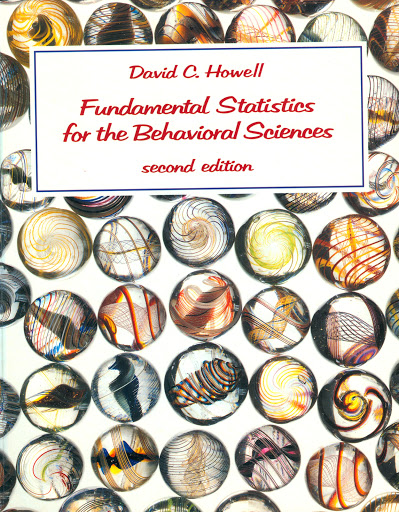
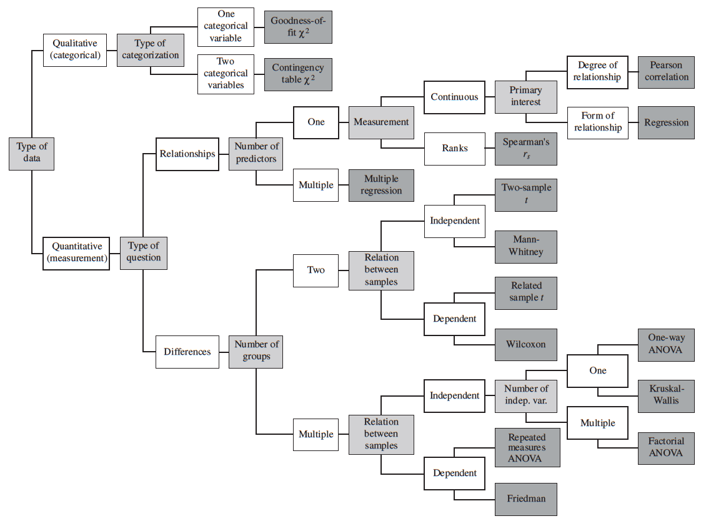

|
STATISTICS FOR PSYCHOLOGY
USING R for BEHAVIORAL ANALYSIS
- BOOK: Learning Statistics with R:
- A tutorial for psychology students(aka lsr)
- 2018, Navarro
- https://learningstatisticswithr.com/
- contents
-
- Background: (Why do we learn statistics? | A brief introduction to research design)
- An Introduction to R: (Getting started with R | Additional R concepts)
- Working with Data: (Descriptive statistics | Drawing graphs | Pragmatic matters | Basic Programming)
- Statistical Theory: (Introduction to probability | Estimating unknown quantities from a sample | Hypothesis testing)
- Statistical Tools: (Categorical data analysis | Comparing two means | Comparing several means (one-way ANOVA) | Linear regression | Factorial regression)
- Other Topics: (Bayesian statistics | Epilogue)
- R lsr package for psychological statistical analysis - to accompany lsr book
- links to references
- BOOK: R for Psychological Science
- 2018 Navarro
- https://psyr.djnavarro.net/index.html
- contents
- links to references
- BOOK: Using R for Psychological Research
- http://personality-project.org/r/
- 2007, personality-project.org team
- contents
- partial list of useful commands: http://personality-project.org/r/#useful
-
- (Introduction | General comments | Data manipulation)
- (Graphic displays | Inferential statistics | Multivariate Analysis | Adding new functions, packages)
- BOOK: Psychometric Theory
- 2019, Revelle | personality-project.org team
- https://personality-project.org/r/book/
- contents
- (Introduction | A theory of data | The problem of scale)
- (Correlation and Covariance | Multiple Correlation and Multiple Covariance)
- (Constructs, components and factor models | Reliability | The "New Psychometrics" Item Response Theory)
- Appendix A - Getting Started with R
- http://www.personality-project.org/r/book/AppendixA.pdf
- (R: A statistical programming environment | General comments | Using R in 12 simple steps | Getting started)
- (Basic R commands & syntax | Entering or getting data)
- (Basic descriptive statistics - Using functions in the psych package | Simple graphics)
- Appendix B - R commands
- Appendix E - Review of Matrix Algebra
- COURSE: http://personality-project.org/courses/405.syllabus.html
- REF: Notes of the Use of R for Psychological Experiments and Questionnaires
- 2003, Baron, Li
- reference card
- contents
- (Introduction | A few useful concepts and commands | Basic method)
- (Reading and transforming data | Graphics | Statistics | References)
- PACKAGES
-
- psych (R package) (Revelle | personlity-project.org team) - psychological statistics
- lsr (R package) (Navarro) - for textbook "Learning Statistics with R" (lsr) - wordier explanations of psychological statistics
- jsPsych (javascript app) - for psychology experiments - https://www.jspsych.org/
- jaysire (R package) (Navarro) - to use with jsPsych for psychology experiments
BEHAVIOURAL STATISTICS BOOKS
- BOOK: Statistics for Psychology
- 2013, Aron, Coups, Aron
- in library - pdf
- full contents
- web chapters
- BOOK: Statistical Methods for Psychology
- 2010, Howell
- in library - pdf
- full contents
- web chapters:
- chapter notes:
- ch18) resampling and nonparametric approaches to data
- BOOK: Introduction to the Practice of Statistics
- (includes statistics problems sorted by industry)
- 2006, Moore, McCabe
- in library (book with CD chapters)
- contents
BEHAVIOURAL STATISTICS STUDIES
|

|
- BOOK: Fundamental Statistics for the Behavioral Sciences
- 1989 David C. Howell
- contents
- in library
|
|
Behavior Statistics (PS249) class notes - Howell textbook
|
|
Full Textbook Notes
|
TOOLS for BEHAVIORAL STATISTICS
DISTRIBUTIONS
- Tables from the Good Old Days
-
- z-table1 pdf
- z-table2 pdf
- t-table pdf
- F & chi-square pdf
-
statistics tables pdf
- Normal Distribution | Chi-Square Distribution | Binomial Distribution | Student’s t Distribution | F Distribution: percentiles
- Mann-Whitey Test Statistic | Kruskal-Wallis Test Statistic for Small Sample Sizes | Wilcoxon Signed Rank Test Statistic
- Kendell’s Test Statistic | Kilogorov Test Statistic | Smirnov Test Statistic for Two Samples of Equal Size/Different Size
- REFERENCES
-

back home
|